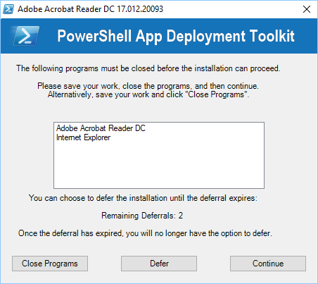

About¶
The PowerShell App Deployment Toolkit provides a set of functions to perform common application deployment tasks and to interact with the user during a deployment. It simplifies the complex scripting challenges of deploying applications in the enterprise, provides a consistent deployment experience and improves installation success rates.

The PowerShell App Deployment Toolkit can be used to replace your WiseScript, VBScript and Batch wrapper scripts with one versatile, re-usable and extensible tool.
Features¶
- Easy To Use – Any PowerShell beginner can use the template and the functions provided with the Toolkit to perform application deployments.
- Consistent – Provides a consistent look and feel for all application deployments, regardless of complexity.
- Powerful – Provides a set of functions to perform common deployment tasks, such as installing or uninstalling multiple applications, prompting users to close apps, setting registry keys, copying files, etc.
- User Interface – Provides user interaction through customizable user interface dialogs boxes, progress dialogs and balloon tip notifications.
- Localized – The UI is localized in several languages and more can easily be added using the XML configuration file.
- Integration – Integrates well with ConfigMgr (SCCM); provides installation and uninstallation deployment types with options on how to handle exit codes, such as suppressing reboots or returning a fast retry code.
- Updatable – The logic engine and functions are separated from per-application scripts, so that you can update the toolkit when a new version is released and maintain backwards compatibility with your deployment scripts.
- Extensible – The Toolkit can be easily extended to add custom scripts and functions.
- Helpful – The Toolkit provides detailed logging of all actions performed and even includes a graphical console to browse the help documentation for the Toolkit functions.
Functionality¶
User Interface¶
- An interface to prompt the user to close specified applications that are open prior to starting the application deployment. The user is prompted to save their documents and has the option to close the applications themselves, have the toolkit close the running executables, or optionally defer. Optionally, a countdown can be displayed until the applications are automatically closed.
- The ability to allow the user to defer an installation X number of times, X number of days or until a deadline date is reached.
- The ability to prevent the user from launching the applications that need to be closed while the application installation is in progress.
- An indeterminate progress dialog with customizable message text that can be updated throughout the deployment.
- A restart prompt with an option to restart later or restart now and a countdown to automatic restart.
- The ability to notify the user if disk space requirements are not met.
- Custom dialog boxes with options to customize title, text, buttons & icon.
- Balloon tip notifications to indicate the beginning and end of an installation and the success or failure of an installation.
- Branding of the above UI components using a custom logo icon and banner for your own Organization.
- The ability to run in interactive, silent (no dialogs) or non-interactive mode (default for running SCCM task sequence or session 0).
- The UI is localized in several languages and more can easily be added using the XML configuration file.
Functions / Logic¶
- Provides extensive logging of both the Toolkit functions and any MSI installation / uninstallation.
- Provides the ability to execute any type of setup (MSI or EXEs) and handle / translate the return codes.
- Mass remove MSI applications with a partial match (e.g. remove all versions of all MSI applications which match "Office").
- Check for in-progress MSI installations and wait for MSI Mutex to become available.
- Send a sequence of keys to an application window.
- Perform ConfigMgr (SCCM) actions such as Machine and User Policy Refresh, Inventory Update and Software Update.
- Supports installation of applications on Citrix XenApp/Remote Desktop Session Host Servers.
- Update Group Policy.
- Copy / Delete Files.
- Get / Set / Remove Registry Keys and Values.
- Get / Set Ini File Keys and Values.
- Check File versions.
- Pin or Unpin applications to the Start Menu or Task Bar.
- Create Start Menu Shortcuts.
- Register / Unregister DLL files.
- Refresh desktop icons.
- Test network connectivity.
- Test power connectivity.
- Check whether a PowerPoint slideshow is running.
SCCM Integration¶
- Handles ConfigMgr exit codes, including time sensitive dialogs supporting ConfigMgr's Fast Retry feature – providing more accurate ConfigMgr Reporting (no more Failed due to timeout errors).
- Ability to prevent reboot codes (3010) from being passed back to ConfigMgr, which would cause a reboot prompt.
- Supports the CM12 application model by providing an install and uninstall deployment type for every deployment script.
- Bundle multiple application installations to overcome the supported limit of 5 applications in the CM12 application dependency chain.
- Compared to compiled deployment packages, e.g. WiseScript, the Toolkit utilises the ConfigMgr cache correctly and ConfigMgr Distribution Point bandwidth more efficiently by using loose files.
Help Console¶
- A graphical console for browsing the help documentation for the toolkit functions.
Reviews¶
- "Truly powerful application deployment toolkit written in PowerShell! Solving some classic problems" – Jörgen Nilsson, Microsoft MVP, Enterprise Client Management
- "Another very cool SCCM 2012 must have tool – PowerShell App Deployment Toolkit" – Kent Agerlund, Microsoft MVP, Enterprise Client Management
- "This is really an exceptional Toolkit! It's the swiss army knive for software deployment. For every task you possible need to perform, there is a function for it. And you can extend it with your own functions if you like. Even when you're using something like SCCM to deploy your software, the toolkit can have real value as it fills the gabs left by SCCM. Thanks!" – Quint
- "Excellent support guys! This toolkit is the best thing around to easily wrap and deploy software to end users and it just keeps on getting better with every release!" – Maarten Pauchet
- "The PowerShell App Deployment toolkit rocks! I tried it today and love it." – Alex Verboon
Presentations¶
The PS App Deployment Toolkit has featured in the following industry conferences:
- "Become the Hero of the Day – Master ConfigMgr 2012 R2 with a Limited Budget and Free Community Tools" sessions at NIC Conference 2013 and System Center Universe 2014 (Kent Agerlund).
- "Microsoft System Center Configuration Manager Community Jewels" session at MS TechEd North America 2014 (Jorgen Nilsson, Stefan Schörling) – see video @ 18 mins
- "Microsoft System Center Configuration Manager Community Jewels" session at MS TechEd Europe 2014 (Jorgen Nilsson, Stefan Schörling) – see video @ 21 mins